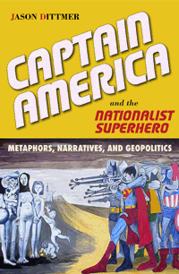

A provocative exploration of the nationalist superhero genre in the United States, Canada, and Britain
A provocative exploration of the nationalist superhero genre in the United States, Canada, and Britain


 A provocative exploration of the nationalist superhero genre in the United States, Canada, and Britain
A provocative exploration of the nationalist superhero genre in the United States, Canada, and Britain

|  |
Captain America and the Nationalist SuperheroMetaphors, Narratives, and GeopoliticsJason Dittmerpaper EAN: 978-1-43990-977-5 (ISBN: 1-4399-0977-6) |
Outstanding Academic Title, Choice, 2013
"In Captain America and the Nationalist Superhero, Dittmer traces the emergence of geopolitical attitudes to the most humble of cultural texts. He shows in remarkable depth how comics, with their nationalist fantasies and embodied forms of power, weave particular relations among gender, race, science, technology, place, and territory."
—Paul Adams, University of Texas at Austin
Nationalist superheroes—such as Captain America, Captain Canuck, and Union Jack—often signify the "nation-state" for readers, but how do these characters and comic books address issues of multiculturalism and geopolitical order? In his engaging book Captain America and the Nationalist Superhero, geographer Jason Dittmer traces the evolution of the comic book genre as it adapted to new national audiences. He argues that these iconic superheroes contribute to our contemporary understandings of national identity, the righteous use of power, and the role of the United States, Canada, and Britain in the world.
Tracing the nationalist superhero genre from its World War II origins to contemporary manifestations throughout the world, Captain America and the Nationalist Superhero analyzes nearly one thousand comic books and audience responses to those books. Dittmer also interviews key comic book writers from Stan Lee and J. M. DeMatteis to Steve Englehart and Paul Cornell.
At a time when popular culture is saturated with superheroes and their exploits, Captain America and the Nationalist Superhero highlights the unique relationship between popular culture and international relations.
Excerpt available at www.temple.edu/tempress
"Captain America and the Nationalist Superhero makes an important contribution to current theoretical and historical debates about the character of American exceptionalism and its contradictory relationship to U.S. hegemony. The strength of the book lies in the author's geopolitical framing of the genre. Its comparative element offers a more solid grounding in the links between the genre and nationalism than a single focus on Captain America or other American superheroes would provide. Dittmer’s obvious command of the empirical material and his interesting use of illustrative examples, letters from readers, and statements by strip creators and writers inform his theorizing about gender, nationalism, and geopolitics."
—John Agnew, Professor of Geography, University of California at Los Angeles, and author of Hegemony (Temple)
"[A] novel and provocative analysis about how the figure of the 'nationalist superhero' reflects, consolidates, and propels the nationalistic metaphors and narratives that are inextricable elements of the modern nation-state and of the modern, self-governing citizen.... Dittmer's tome is theoretically informed and sophisticated. It makes a compelling case for the position that the ways that a people entertains itself, its popular culture, are fertile sites for analyses of how that people comes to know itself and others. Summing Up: Highly recommended."
—Choice
Acknowledgments
1. Introducing Nationalist Superheroes
2. Gendered Nation-state, Gendered Hero
3. Embodying Multiculturalism
4. Origins
5. Narratives of Continuity and Change
6. Grounding the Nation-state
7. Geopolitical Orders
8. Alternate Worlds
9. Parody and Subversion
Afterword
Notes
References
Index
Jason Dittmer is Reader in Human Geography at University College London. He is the author of Popular Culture, Geopolitics, and Identity and coeditor (with Tristan Sturm) of Mapping the End Times: American Evangelical Geopolitics and Apocalyptic Visions.
Geography
Cultural Studies
Political Science and Public Policy
© 2015 Temple University. All Rights Reserved. This page: http://www.temple.edu/tempress/titles/2250_reg.html.